The current experience
Reviewed the existing journey and analysed it step by step, looking for where people get stuck and where the opportunities are.
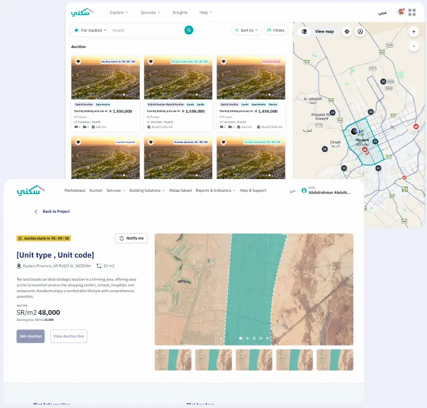
Work / Online auctions
A product inside the Sakani platform that lets organisations sell fixed assets through online or hybrid auctions, and lets people and companies join and bid with ease and full transparency.
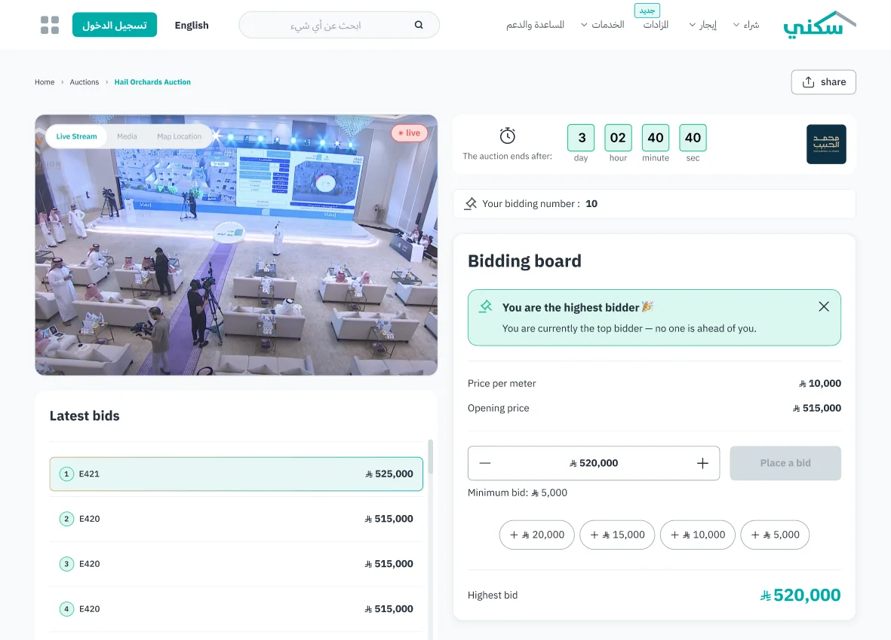
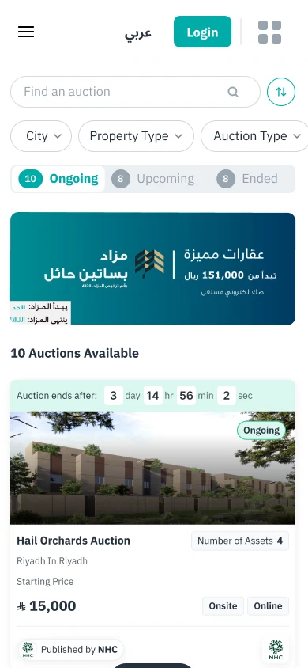
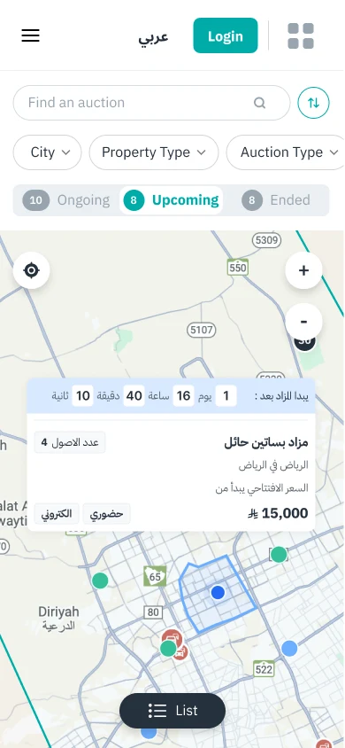
Context
The project started with a short list of requirements from the business team: a handful of improvements they needed in the auction product. I saw a bigger opportunity in it, so I took the initiative to study what could really be improved, from what the business needed all the way to what bidders experience.
Unlike most projects, my role here wasn't only to deliver the requirements. It was to lead the product thinking, without letting the current requirements set a ceiling on what we could fix.
The brief asked for tweaks. The product needed a rethink.
The challenge
Requirements usually arrive with a close delivery date, and this time the ask was bigger than a few fixes. I had to research the current auction, understand its problems, look at best practices, and then convince the business team that the whole product needed a redesign.
So I started with research instead of screens, and put together a short presentation that laid out the problems and the opportunities.
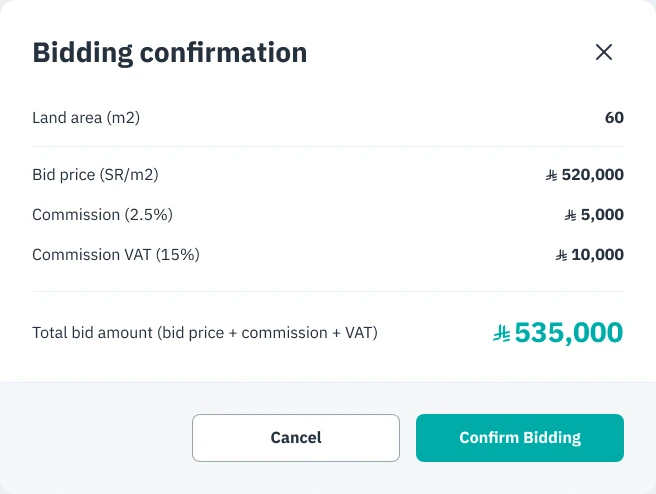
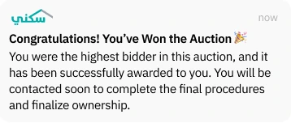
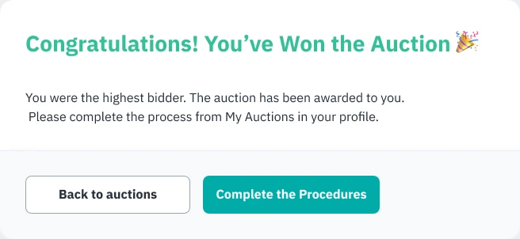
Research
Once we had the green light I didn't jump into screens. I worked in three steps, and rebuilt the journey end to end before drawing a single UI.
Reviewed the existing journey and analysed it step by step, looking for where people get stuck and where the opportunities are.

Studied platforms that specialise in real estate auctions to pull out patterns and practices worth learning from.
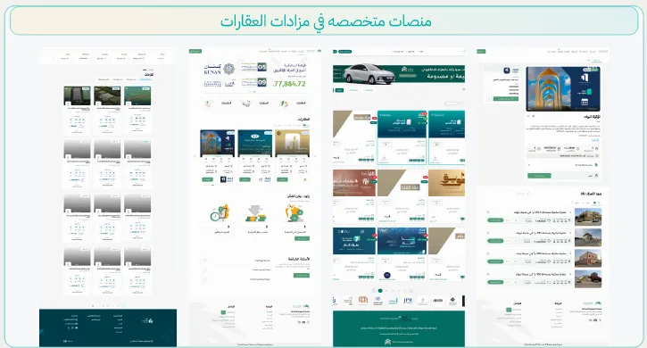
Rebuilt the journey from scratch so joining an auction is clear and easy, from discovering it to everything that happens after.
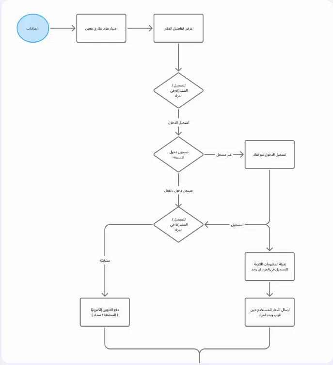
Was the problem in the interface, or in the experience itself?
What I found
The research showed the problems were spread across the whole journey, not stuck on a single page. So I stopped treating the auction as separate screens and designed it as one complete experience: before, during and after.
New users didn't always know where to start, or what they needed to take part.
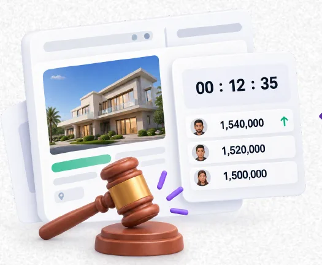
The auction's status, the time left and how the bids were moving weren't always clear enough.
What happens when you win? And when you don't? The next steps needed to be much clearer.
The design
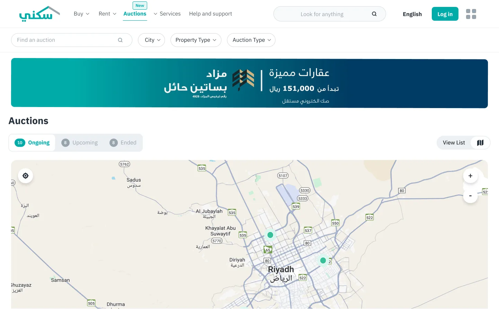
DiscoverFind auctions on a map or in a list, filter by city, property type and auction type, and switch between ongoing, upcoming and ended.
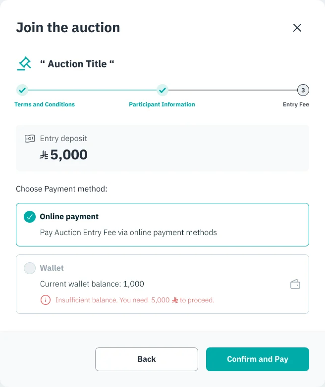
JoinJoining is a short three-step flow: terms, your details, then the entry deposit. Your wallet balance is checked before you pay, so there are no surprises.
BidOne board shows the time left, where you stand, the bid you're about to place with quick increments, and the highest bid, next to the live stream and the latest bids.
Stay informedIn-app messages and SMS for the moments that matter: you joined, you're the highest bidder, you've been outbid, the auction was awarded to you.
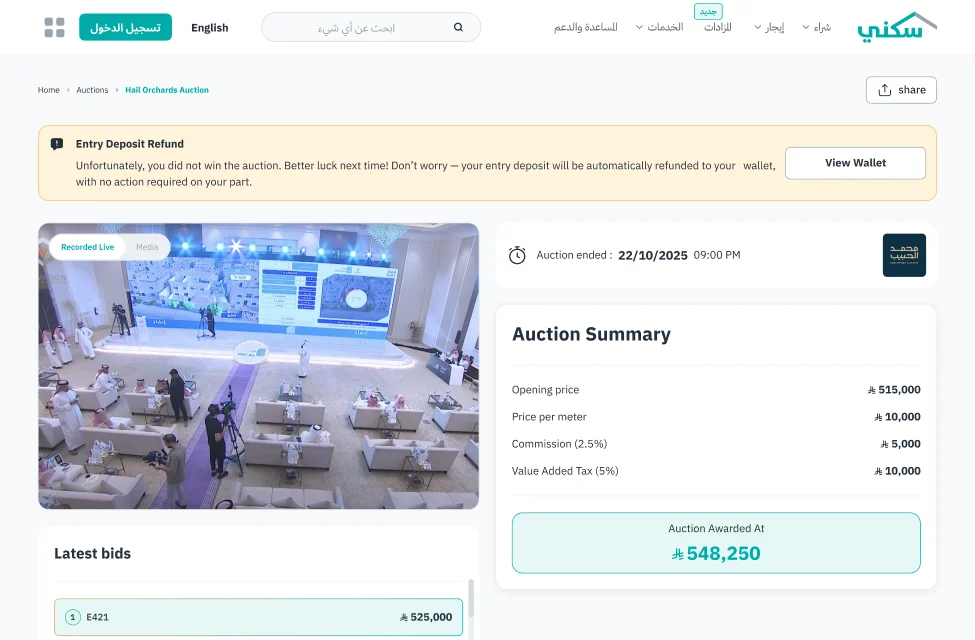
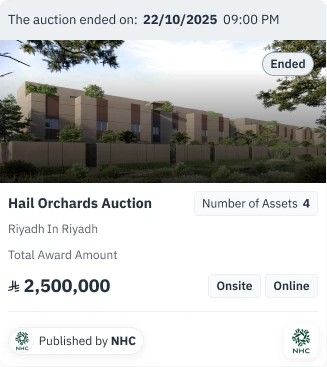
AfterAn ended auction keeps its story: a clear refund notice if you didn't win, a full summary with the awarded price, and ended cards in the list that show the final amount.
On mobileThe same journey on a small screen: list and map views, live countdowns on every card, and filters that stay one tap away.
More screens
Pages and states from the full flow, on desktop and mobile. Click any screen to see it larger.
Outcome
Closing thoughts
It was the case for redesigning. Starting with research gave the business team a clear reason to say yes, and it gave me a map of the whole journey before I touched a single pixel.
Treating the auction as one experience, from the first search to the last refund, is what made the details work: the countdown, the bidding board, the messages and every possible ending all tell the same story.
The lesson I keep from this project: when the brief is small but the problem is big, show the problem first. People back what they can see.